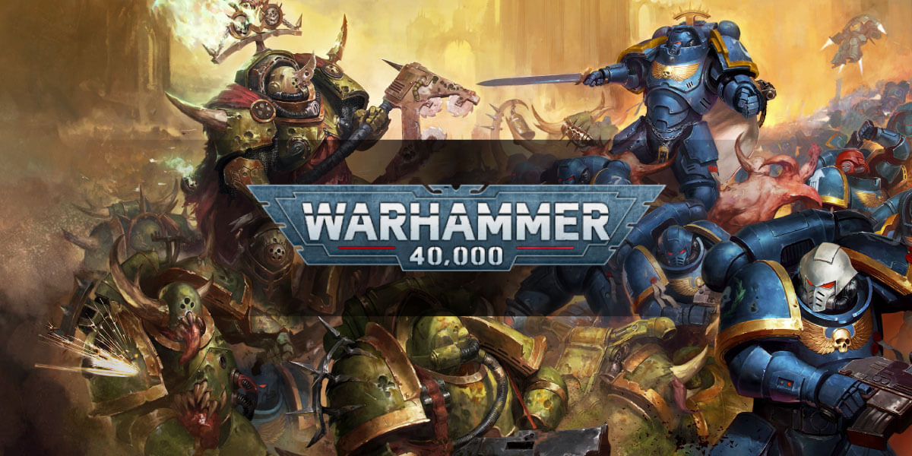
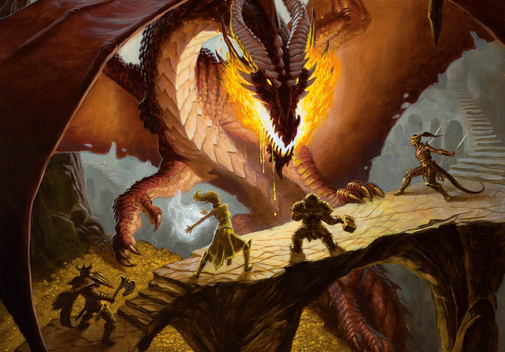

Project Idea
Tabletop Game Generator
Tabletop games like Dungeons and Dragons and Warhammer have a very small, yet passionate communities. These games all have very intricate rules and require a considerable amount of setup. It is actually often times the setup that drives newer players away from these games, as it serve
Solution:
To combat this initial setup, we could create an app that generates playable scenarios for your game. All you would need to do is enter the ruleset and a list of scenarios would be created for you. It would also be able to learn from your past games, allowing you it to generate games that you are more likely to enjoy. A slightly more ambitious feature would be using this app to create entire worlds to base multiple campaigns on, allowing you to create a detailed, multi-part epic for your games
 Description
To use the app, you would first need to enter the rules of the game you are playing. For convinence, preset rules will also be available if the game you are playing is a popular one. Then, you would be able to tune a bunch of parameters to get the type of game you want. Things such as setting, length, number of players, stats of said players, time period and complexity would be changed here. In addition to this, you could enter in the details of a previous games that went very well, allowing the A.I. to create a game that follows a similar structure. Once the game is generated the game would then be taken over by the players (in the case of D&D, this is where a dungeon master would take over.). The map that the characters would play on would also be generated by the app, and a printable version of this can also be created. This app would also allow you to save information about the games that you haven't finished yet, making continuing games a whole lot easier. Suggestions for key events to happen during the game would also be generated by the app, and players can decide if they wish to act out these. Once a game has been completed, you can then save the game and rate the generated story and key events. This would allow the A.I. to receive feedback on the stories generated. A social feature would also be included in the app, allowing you to share your stories with other users and furthering the sense of community surrounding these games.
Tools and Technologies
This app would run on a web browser, as well as a mobile device. So the web version could be made using a combo of node.js and react (or any other framework really, these would just be my preferences) and the mobile version could be made using something like flutter. The main area where alot of RnD needs to be done is in the A.I. There are already many "story generators" available today and many of them are open source. We could use this as a starting point and then tweak it to fit our needs. The same goes for the map creation. There are many A.I. models that can create brand new images if given a list of keywords and these could be repurposed. The social networking aspect can also be built on the previous frameworks (maybe using angular instead of something like react would make it alot easier).
Skills Required
It goes without saying that a good amount of knowledge in all these frameworks and lanugages will be required in addition to a good amount of programming skill. A deep understanding of the A.I. models used to build the story and image generation models is also required. While these skills wouldn't be too unattainable, they would take a long time to cultivate and develop
Outcome
If this app were to be devloped with a good team to keep up with it and make sure it stays upto date and as bug free as possible, it would let alot more people get into table top games and build a much stronger community of players across the world. It might even have the potential to bring table top games into the mainstream.